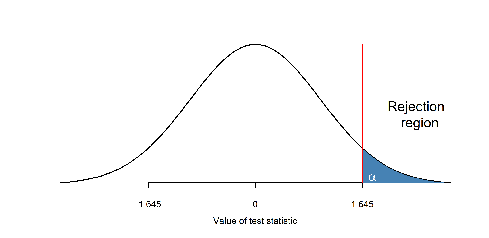

Week 6 — Hypothesis testing I
Business Forecasting
Where we are
Describing data → Reasoning under uncertainty → Regression → Time series forecasting
Reasoning under uncertainty. Last week: a range around an estimate. This week: testing a claim about a parameter, and what a p-value does and does not tell you.
- This week (Testing I): one-sample hypothesis testing — hypotheses, test statistic, rejection region, Type 1 & 2 errors, power, and p-values.
Fast & hands-on: every test we set up, you run in R (qnorm, pnorm, t.test) — the exercise slides run right here in the browser.
🔁 Before we start — two minutes on last week
exam_data is the Households & Environment Survey — one row per household, 14,505 rows, with household_size giving the number of people living in the home.
- Compute the mean and the standard deviation of
exam_data$household_size, then the standard error of the mean (the sample size is 14505). - Build the 95% confidence interval for the mean household size.
- Rebuild the same interval at 99% and say what changed.
qnorm(0.975) is the critical value leaving 2.5% in each tail; qnorm(0.995) leaves 0.5%. The endpoints are xbar - z * se and xbar + z * se, which you can write in one line as xbar + c(-1, 1) * z * se.
Only the critical value moved, from 1.96 to 2.58, and that alone made the interval 31% wider: more confidence is bought with a vaguer answer. You just used the critical value to mark off the values of \(\mu\) the data leave plausible — today we turn it around and use the same number as a cutoff: we fix one claimed value of \(\mu\) and ask whether the data landed far enough away from it to reject the claim.
Hypothesis Testing
Hypothesis Testing
Can we get a higher price if cleanliness level is above 4.5?
This is a hypothesis testing question: we see which of two competing hypotheses is more likely given the data.
- Hypothesis is a claim about a parameter or a distribution.
- \(H_0\) Null Hypothesis: the claim to be tested, the skeptical perspective.
- Prices of clean and dirty apartments are equal
- \(H_0: \mu_c=\mu_d\)
- \(H_A\) Alternative Hypothesis: an alternative claim under consideration.
- Prices of clean apartments are higher
- \(H_A: \mu_c>\mu_d\)
- Assume the null is true and see if the data reject it in favor of the alternative.
- You either reject the null, or fail to reject it (never “accept” it).
Hypothesis testing: more examples
Some examples of hypotheses:
- You released a promotion (10% off) to some customers. Do they spend a different amount than those who didn’t get it?
- \(H_0: \mu_p = \mu_n\) (promotion group spends the same)
- \(H_A: \mu_p \neq \mu_n\) (promotion group spends a different amount)
- A new snack gets an “excessive sugar” sticker if it exceeds 100g of sugar. You take a sample and test.
- \(H_0: \mu_s = 100\) (average sugar is 100 or less)
- \(H_A: \mu_s > 100\) (average sugar is more than 100)
Hypothesis testing: why a test at all?
- Suppose we calculated the sample mean for sugar content. It’s either below or above 100g.
- Why would we need a fancy test?
- Because we only have a sample, but we want to learn about the population parameter!
- Maybe in our sample it’s below 100g, but in the whole population it’s above.
- Hypotheses are always about parameters! Never about sample statistics.
🖊️ Exercise 1 — State the hypotheses
A report claims the true mean monthly electricity bill of Mexican households is 200. We want to test whether it differs from 200. Which pair states the hypotheses correctly?
- \(H_0: \mu = 200\) vs \(H_A: \mu \neq 200\)
- \(H_0\): sample mean \(= 200\) vs \(H_A\): sample mean \(\neq 200\)
- \(H_0: \mu \neq 200\) vs \(H_A: \mu = 200\)
- \(H_0: \mu > 200\) vs \(H_A: \mu < 200\)
\(H_0: \mu = 200\) vs \(H_A: \mu \neq 200\).
Hypotheses are always about the population parameter \(\mu\), never the sample mean. “Differs from” is two-sided (\(\neq\)), and the null is the claim being tested (\(\mu = 200\)).
Testing Procedure
A test procedure is a rule based on sample data for deciding whether to reject the null.
It relies on two elements:
- Test statistic
- A function of the sample data that summarizes evidence for or against the hypothesis
- We know how it is distributed under the null (e.g. standardized mean)
- Rejection region
- Values of the test statistic for which we reject the null
- These are values that are very unlikely under the null hypothesis
- Typically threshold-based: reject \(H_0\) if the test statistic > k
- Values of the test statistic for which we reject the null
Testing Procedure: Example
Sugar example. Sample \(n=36\), population standard deviation known, \(\sigma_x=20\).
Test statistic: \[\cssId{mt-tstat}{z}=\frac{\cssId{mt-gap}{\bar{x}-100}}{\underbrace{\cssId{mt-se}{\sigma_x/\sqrt 36}}_{SE}}\]
Rejection region: for a 5% significance level, reject if \(z \in \{1.645, \infty \}\)

- tstat: The test statistic: the observed gap divided by the noise you should expect. Read it as “we landed this many standard errors away from the claim”.
- gap: The gap you actually observed — sample mean minus the value the claim says. On its own it means nothing; it only counts once you compare it to the noise.
- se: The standard error: how much a sample mean of this size bounces around from sample to sample by pure luck. It is the yardstick the gap is measured against.
The claim we will test
Our running data: exam_data — the Fall 2025 Households & Environment Survey. One row per household; electricity_bill_monthly is the monthly bill in pesos, with some missing values.
A published report claims the true mean monthly bill is 200.
Before any test: how many valid responses are there, where is the sample centred, and how spread out is it?
🖊️ Exercise 2 — Describe the sample
Using exam_data$electricity_bill_monthly, and dropping the missing values first:
- How many valid responses are there?
- What is the sample mean, and the sample standard deviation?
- What is the standard error of the mean?
x <- x[!is.na(x)] removes NA values; then length(), mean(), sd(). The standard error of a mean is s / sqrt(n).
13,255 valid responses, a sample mean of about 206, a standard deviation of about 344 (the bills are heavily right-skewed), and a standard error of about 2.98.
🖊️ Exercise 3 — The test statistic by hand
Write the test statistic for \(H_0: \mu = 200\) yourself, from the definition \(\dfrac{\bar x - \mu_0}{s/\sqrt n}\) — no t.test() yet.
After bill <- bill[!is.na(bill)], n is length(bill). The denominator is s / sqrt(n).
Testing Procedure Summary
- Set up your hypotheses
- Calculate your test statistic
- Check it against the rejection region
- Decision: Reject or fail to reject the null hypothesis
We will now go into the details of each step.
Is that a big number?
The statistic you just computed is a little over 2. Two what?
It is only interpretable against a yardstick: the values the statistic would take if the report were right. We can build that yardstick by simulating the world in which \(H_0\) is true.
🖊️ Exercise 4 — Build the null distribution
Simulate 3,000 surveys drawn from a world where the report is right: bills centred at 200, with the same spread as the data, n = 400 households each.
- In each simulated survey, compute the same statistic as in Exercise 3.
- Draw the histogram of the 3,000 statistics (
freq = FALSE), and overlaydnormwithcurve(dnorm(x), add = TRUE, col = "red", lwd = 2). - Mark your observed statistic on the picture with
abline(v = ..., lwd = 3). - Report the mean and standard deviation of the 3,000 statistics, and the share of them at least as far from 0 as yours.
replicate(3000, expr) runs expr 3,000 times and collects the results. hist(v, freq = FALSE) puts the histogram on the density scale so curve(..., add = TRUE) lines up. mean(abs(v) >= k) is a share, because TRUE counts as 1.
bill <- exam_data$electricity_bill_monthly
bill <- bill[!is.na(bill)]
z_obs <- (mean(bill) - 200) / (sd(bill) / sqrt(length(bill)))
set.seed(6)
null_z <- replicate(3000, {
sim <- rnorm(400, mean = 200, sd = sd(bill))
(mean(sim) - 200) / (sd(sim) / sqrt(400))
})
hist(null_z, breaks = 40, freq = FALSE, col = "steelblue",
main = "The statistic in 3,000 worlds where H0 is true", xlab = "Test statistic")
curve(dnorm(x), add = TRUE, col = "red", lwd = 2)
abline(v = z_obs, col = "orange", lwd = 3)
c(mean = mean(null_z), sd = sd(null_z))
mean(abs(null_z) >= abs(z_obs))The simulated statistics are centred on 0 with a standard deviation of 1, and the red standard-normal curve lies on top of the histogram — that is the yardstick. Our observed value sits out in the tail: only about 4–5% of the null worlds produce a statistic that far from 0 or further.
What you just built
The histogram is the distribution of the test statistic under \(H_0\). It came out standard normal — which is why the whole week compares statistics to \(N(0,1)\) quantiles.
Two things follow, and both get names later in this deck:
- The cut-off beyond which we call a value “too extreme” → the rejection region.
- The share of the null distribution beyond the observed value → the p-value.
Decision errors
Decision errors
| Do not reject \(H_0\) | Reject \(H_0\) in favor of \(H_A\) | |
|---|---|---|
| \(H_0\) true | Okay | Type 1 Error |
| \(H_A\) true | Type 2 Error | Okay |
- \(H_0\): You are not pregnant
- \(H_1\): You are pregnant

Decision errors: free shipping
Do people spend more if they get free shipping? (\(H_0\): they spend the same)
- Type 1 error: reject null when \(H_0\) is true
- Conclude free-shipping customers spend more, while in reality they spend the same
- Type 2 error: don’t reject null when \(H_A\) is true
- Conclude they spend the same, while free-shipping customers actually spend more
- Trial of a murderer: \(H_0\) innocent, \(H_1\) guilty. Describe error types 1 and 2.
- Type 1: Convict an innocent
- Type 2: Do not convict a murderer
- Probability of a type 1 error is \(\alpha\) — the size or significance level.
- We don’t want to incorrectly reject the null more than \(\alpha \cdot 100\%\) of the time.
- Probability of a type 2 error is \(\beta\) — to calculate it, you need the true \(\mu\).
Probability of type 1 error
- In the sugar example, suppose the null is true and \(\mu_s=100\).
- You take a sample of 36.
- Say you were unlucky: by chance you got rare high-sugar packages and \(\bar{x}=106\), so \(z=\frac{106-100}{20/\sqrt{36}}=1.8\). You reject the null — an error.
- Q: What is the probability the standardized mean of these 36 is in the rejection region (larger than 1.645)?
- What’s the probability of making such an error?
\[\small \cssId{mt-alpha}{\alpha} = \cssId{mt-underH0}{P_{H_0}}(\bar{X} > \cssId{mt-critxbar}{105.483}) = P_{H_0}\!\left( \frac{\bar{X} - 100}{20/\sqrt{36}} > \frac{105.483 - 100}{20/\sqrt{36}} \right)\]
\[\small \overset{\text{CLT}}{=}\; P(Z > \cssId{mt-zcrit}{1.645}) = 1 - \cssId{mt-Phi}{\Phi}(1.645)\]
- alpha: The significance level: how often you are willing to reject a null that is actually true. You pick it before seeing the data — usually 5%.
- underH0: The subscript says the probability is computed in a world where the null is true. Everything a test reports is “what would happen if the claim were right”.
- critxbar: The sample mean at which you would start rejecting. Anything above it is treated as too extreme to blame on sampling luck.
- zcrit: The critical value for a one-sided 5% test: exactly 5% of a standard normal sits above 1.645. Past it, we call the result too extreme to blame on luck.
- Phi: The standard normal CDF — the area to the left of a point. This is
pnorm()in R.
Where exactly does 1.645 come from?
The rejection region for a one-sided test at 5% is a piece of the standard normal — the piece that holds 5% of the area on the right.
Draw it before you see it drawn.
🖊️ Exercise 5 — Draw the rejection region
- Draw the standard normal density between \(-3\) and \(3\) with
curve(dnorm(x), ...). - Find the cut-off that leaves exactly 5% of the area to its right.
- Shade that area with
polygon()and mark the cut-off withabline(v = ...).
qnorm(p) returns the value with probability p below it, so the 5% upper tail starts at qnorm(0.95). To shade a region under a curve: polygon(c(a, seq(a, b, 0.01), b), c(0, dnorm(seq(a, b, 0.01)), 0), col = "steelblue").
qnorm() and pnorm() are inverses: one turns an area into a cut-off, the other turns a cut-off back into an area.
The rejection region and α

- Choosing the critical value determines \(\alpha\) (and vice versa). We usually choose \(\alpha\), which fixes the rejection region.
- What is the critical value for \(\alpha=0.1\)? For \(\alpha=0.01\)? For \(\alpha=0\)?
🖊️ Exercise 6 — Break it: change α
Take the picture you just drew and change one thing: the significance level.
- Compute the one-sided critical value for \(\alpha = 0.10\), \(0.05\), \(0.01\) and \(0\).
- Redraw the density with all three finite cut-offs marked.
- Report what happens to the width of the rejection region as \(\alpha\) falls, and what the \(\alpha = 0\) case means in practice.
qnorm(1 - alphas) is vectorised — it returns all four cut-offs at once. abline(v = <vector>, ...) draws a line at each element.
alphas <- c(0.10, 0.05, 0.01, 0)
zc <- qnorm(1 - alphas)
rbind(alpha = alphas, critical_value = round(zc, 3))
curve(dnorm(x), xlim = c(-3, 4), lwd = 2, xlab = "Test statistic", ylab = "")
abline(v = zc[1:3], col = c("darkgreen", "red", "purple"), lwd = 2)
legend("topright", legend = paste("alpha =", alphas[1:3]),
col = c("darkgreen", "red", "purple"), lwd = 2, bty = "n")1.282, 1.645, 2.326 — and Inf for \(\alpha = 0\). Lowering \(\alpha\) pushes the cut-off to the right and shrinks the rejection region: you demand more evidence before rejecting. At \(\alpha = 0\) the region is empty — a test that never rejects, and therefore never makes a Type 1 error, because it never concludes anything.
🖊️ Exercise 7 — Type 1 error, made visible
Run 5,000 studies in a world where the null is true: sugar content really is \(\mu_s = 100\), \(\sigma = 20\), \(n = 36\). Each study computes the statistic and rejects if it exceeds the 5% critical value.
- What share of these 5,000 honest studies reject a null that is true?
- Repeat the count at the 10% and the 1% critical values.
- Draw the histogram of the 5,000 statistics with the 5% cut-off marked.
mean(z > qnorm(0.95)) returns the share of the vector z above the cut-off.
set.seed(11)
z <- replicate(5000, (mean(rnorm(36, mean = 100, sd = 20)) - 100) / (20 / sqrt(36)))
c(alpha_0.10 = mean(z > qnorm(0.90)),
alpha_0.05 = mean(z > qnorm(0.95)),
alpha_0.01 = mean(z > qnorm(0.99)))
hist(z, breaks = 50, col = "grey80",
main = "5,000 studies where H0 is TRUE", xlab = "Test statistic")
abline(v = qnorm(0.95), col = "red", lwd = 3)About 10%, 5% and 1% of the studies reject — even though nothing is wrong with the null, the data, or the analyst. The share matches the \(\alpha\) you chose.
What the simulation showed
\(\alpha\) is not a description of one study. It is the long-run rate at which a correct null gets rejected: run the honest study 5,000 times at \(\alpha = 0.05\) and roughly 250 of them report a “finding”.
That is the price of the rejection region — and lowering it has a cost of its own.
🖊️ Exercise 8 — What a Type 1 error means here
In our electricity-bill test (\(H_0: \mu = 200\)), what would a Type 1 error mean?
- Concluding the mean bill differs from 200 when in truth it equals 200
- Concluding the mean bill equals 200 when in truth it differs
- Collecting a sample that is too small
- Choosing the wrong reference distribution
Concluding the mean bill differs from 200 when in truth it equals 200.
Type 1 error = rejecting a true \(H_0\) (a “false positive”). Its probability is the significance level \(\alpha\). Failing to reject a false \(H_0\) is a Type 2 error.
Probability of type 2 error
- What’s the probability our sample mean is below the critical value, if the true sugar content is above 100?
- If I take 10000 samples from a distribution with true mean > 100, what share of sample means fall below the rejection region?
- In our example: \[\scriptsize \cssId{mt-beta}{\beta}=P(\text{Type 2 error})=\underbrace{\cssId{mt-underHA}{P_{H_A}}(z<\cssId{mt-zcrit}{1.645})}_{\text{Pr. if alt is true}}=P_{H_A}(\frac{\bar{x}-100}{20/ \sqrt 36}<1.645)\]
- beta: The probability of a Type 2 error: the test fails to reject even though the alternative is true. You can only put a number on it once you name a specific true value.
- underHA: Here the probability is computed in a world where the alternative is true — a different world from the one that fixed the rejection region.
- zcrit: The critical value for a one-sided 5% test: exactly 5% of a standard normal sits above 1.645. Past it, we call the result too extreme to blame on luck.
- Problem: how is \(\small \frac{\bar{x}-100}{20/ \sqrt 36}\) distributed if the alternative is true?
- CLT does not apply to \(\small \frac{\bar{x}-100}{20/ \sqrt 36}\) because 100 is not the true mean under the alternative.
- We need to specify the true mean. Say \(\mu_s=110\). Then CLT applies to \(\small \frac{\bar{x}-110}{20/ \sqrt 36}\).
Probability of type 2 error (cont.)
- Rewrite so we have \(\frac{\bar{x}-110}{20/ \sqrt 36}\) on the left-hand side.
\[\scriptsize \cssId{mt-beta}{\beta} = P_{H_A}(\frac{\bar{x}-100}{20/ \sqrt 36}<1.645)=P_{H_A}(\bar X < \cssId{mt-critxbar}{105.483}) = P\!\left(\frac{\cssId{mt-centre}{\bar X-110}}{20/\sqrt{36}} < \frac{105.483-110}{20/\sqrt{36}}\right)\]
- Now this becomes: \[\small P\!\left(z < \cssId{mt-zshift}{\frac{105.483-110}{20/\sqrt{36}}}\right)=P(z<-1.3551)\]
- Where z is normally distributed thanks to CLT.
- beta: The probability of a Type 2 error: the test fails to reject even though the alternative is true. You can only put a number on it once you name a specific true value.
- critxbar: The sample mean at which you would start rejecting. Anything above it is treated as too extreme to blame on sampling luck.
- centre: Subtract the true mean, not the null value. Only then is this fraction standard normal, because the CLT centres a sample mean on the mean that actually generated the data.
- zshift: How far the rejection cut-off sits from the truth, measured in standard errors. The further the truth is from the cut-off, the less often the test misses it.
Probability of type 2 error: the general formula
- More generally for this type of test:
\[\scriptsize \cssId{mt-beta}{\beta} = P_{H_A}(\bar{X}<\cssId{mt-critxbargen}{\mu_0+z_{1-\alpha}\tfrac{\sigma_x}{\sqrt{n}}}) = P\!\left(\frac{\bar{X}-\mu_s}{\sigma_x/\sqrt{n}}<\cssId{mt-effect}{\frac{\mu_0-\mu_s}{\sigma_x/\sqrt{n}}}+\cssId{mt-z1alpha}{z_{1-\alpha}}\right)\]
- Depends on the true \(\mu\) and where the rejection region is.
- beta: The probability of a Type 2 error: the test fails to reject even though the alternative is true. You can only put a number on it once you name a specific true value.
- critxbargen: The rejection cut-off written back on the original scale: the null value plus so many standard errors. A sample mean above this rejects.
- effect: How far the truth sits from the null, measured in standard errors. The bigger this distance, the smaller beta and the more often the test catches a real effect.
- z1alpha: The one-sided critical value: the point with alpha of the standard normal above it. Choosing alpha is choosing this cut-off — push it further out and Type 1 errors get rarer while Type 2 errors get more common.
Trade-off between type 1 and 2 errors
\[\cssId{mt-beta}{\beta}=P(\text{Type 2 error})=P(Z<\cssId{mt-effect}{\frac{\mu_0-\mu_s}{\sigma_x/ \sqrt n}}+z_{1-\alpha})=\underbrace{\cssId{mt-Phi}{\Phi}(\frac{\mu_0-\mu_s}{\sigma_x/ \sqrt n}+z_{1-\alpha})}_{\text{Normal CDF}}\]
\[\cssId{mt-alpha}{\alpha}=P(\text{Type 1 error})=P(Z>\cssId{mt-z1alpha}{z_{1-\alpha}})=1-\underbrace{\Phi(z_{1-\alpha})}_{\text{Normal CDF}}\]
Both formulas contain the same critical value \(z_{1-\alpha}\). Moving it moves both numbers — in which directions?
- beta: The probability of a Type 2 error: the test fails to reject even though the alternative is true. You can only put a number on it once you name a specific true value.
- effect: How far the truth sits from the null, measured in standard errors. The bigger this distance, the smaller beta and the more often the test catches a real effect.
- Phi: The standard normal CDF — the area to the left of a point. This is
pnorm()in R. - alpha: The significance level: how often you are willing to reject a null that is actually true. You pick it before seeing the data — usually 5%.
- z1alpha: The one-sided critical value: the point with alpha of the standard normal above it. Choosing alpha is choosing this cut-off — push it further out and Type 1 errors get rarer while Type 2 errors get more common.
🖊️ Exercise 9 — Break it: what α costs you in β
Sugar setting: \(\mu_0 = 100\), \(\sigma = 20\), \(n = 36\), and suppose the truth is \(\mu_s = 110\).
For \(\alpha = 0.10\), \(0.05\) and \(0.01\), compute and tabulate:
- the critical value \(z_{1-\alpha}\),
- the sample mean at which you would start rejecting, \(\mu_0 + z_{1-\alpha}\sigma/\sqrt n\),
- \(\beta\) from the formula on the previous slide,
- \(1 - \beta\).
Then say which way each column moves as \(\alpha\) falls.
qnorm(1 - alphas) gives all three critical values at once; pnorm() turns the standardized cut-off into \(\beta\). Assemble the rows with rbind().
mu0 <- 100; mu_true <- 110; sigma <- 20; n <- 36
se <- sigma / sqrt(n)
alphas <- c(0.10, 0.05, 0.01)
zc <- qnorm(1 - alphas)
xbar_crit <- mu0 + zc * se
beta <- pnorm((xbar_crit - mu_true) / se)
rbind(alpha = alphas,
z_crit = round(zc, 3),
xbar_crit = round(xbar_crit, 2),
beta = round(beta, 4),
power = round(1 - beta, 4))\(\beta\) goes 0.043 → 0.088 → 0.250 as \(\alpha\) goes 0.10 → 0.05 → 0.01. Demanding more evidence before rejecting means missing a real effect more often: the two error probabilities move in opposite directions, and the only thing that improves both at once is more data.
The trade-off, stated
If I change the critical value \(z_{1-\alpha}\), it has the opposite effect on \(\alpha\) and \(\beta\). Choosing \(\alpha\) is choosing which of the two errors you would rather make.
Interactive visualization: https://shiny.rit.albany.edu/stat/betaprob/
Power of a test
- Power is the probability of rejecting if the alternative is true.
- Power differs for every possible value of the alternative.
- Power for a one-sided test:
\[\cssId{mt-power}{Power}=P_{H_A}(Reject)=1-\underbrace{P_{H_A}(\text{Not Reject})}_{\text{type 2 error}}=\cssId{mt-onembeta}{1-\beta}\]
\[Power=1-P(Z<\cssId{mt-effect}{\frac{\mu_0-\mu_s}{\sigma_x/ \sqrt n}}+\cssId{mt-z1alpha}{z_{1-\alpha}})\]
- power: Power: the chance the test rejects when the alternative really is true — the chance you actually detect an effect that is there.
- onembeta: If the alternative is true, the test either rejects or it does not, so the two probabilities add to 1. Power and the Type 2 error rate are the same fact stated twice.
- effect: How far the truth sits from the null, measured in standard errors. The bigger this distance, the smaller beta and the more often the test catches a real effect.
- z1alpha: The one-sided critical value: the point with alpha of the standard normal above it. Choosing alpha is choosing this cut-off — push it further out and Type 1 errors get rarer while Type 2 errors get more common.
What makes a test powerful?
Four things could plausibly matter: the sample size \(n\), how far the truth sits from the null, the population spread \(\sigma\), and the significance level \(\alpha\).
Rather than argue about it — count rejections.
🖊️ Exercise 10 — Power by simulation
Sugar test again: \(H_0: \mu = 100\) against \(\mu > 100\), \(\sigma = 20\), \(\alpha = 0.05\).
- Write a function that simulates 2,000 studies with a given true mean and n, and returns the share that reject.
- Run it for true means 102, 105, 110, 115 with
n = 36. - Run the same four with
n = 100. - Compare your simulated numbers with the formula on the Power of a test slide.
Inside the function: mean(replicate(reps, (mean(rnorm(n, mu_true, sigma)) - mu0) / (sigma / sqrt(n))) > zc). sapply(c(102, 105, 110, 115), power_sim, n = 36) applies it to all four true means. The formula version is 1 - pnorm(zc - (mu_true - mu0) / (sigma / sqrt(n))).
mu0 <- 100; sigma <- 20; zc <- qnorm(0.95)
power_sim <- function(mu_true, n, reps = 2000) {
z <- replicate(reps, (mean(rnorm(n, mu_true, sigma)) - mu0) / (sigma / sqrt(n)))
mean(z > zc)
}
set.seed(3)
mus <- c(102, 105, 110, 115)
rbind(true_mean = mus,
n_36 = sapply(mus, power_sim, n = 36),
n_100 = sapply(mus, power_sim, n = 100),
formula36 = round(1 - pnorm(zc - (mus - mu0) / (sigma / sqrt(36))), 3))At n = 36 the rejection share climbs from about 0.14 to 0.998 as the truth moves away from 100; at n = 100 every column is higher. Simulation and formula agree to a couple of percentage points — the formula is doing the same counting, analytically.
What drives power
Power increases if: \(n\) increases; the alternative is further from the null; \(\sigma\) decreases; \(\alpha\) increases.
The first two are what you just measured; the last one is the trade-off from Exercise 9, seen from the other side.
A/B Test Power: Professional Photos
- Airbnb wants to test if professional photos increase weekly revenue.
- Design:
- Control: no photos (baseline \(\mu_0=2000\))
- Treatment: professional photos (suspected \(\mu_a=2200\))
- \(\sigma=600\), \(n=100\) per group, \(\alpha=0.01\)
- Steps:
- State hypotheses: \(H_0: \mu_T - \mu_C = 0\) vs \(H_A: \mu_T - \mu_C > 0\)
- Find the critical value
- Compute power \(= 1 - \beta\)
- Find minimum \(n\) for 80% power
🖊️ Exercise 11 — Run the A/B power calculation
Work steps 2–4 in R. The statistic is a difference of two means, so its standard error combines both groups: \(SE = \sqrt{\sigma^2/n + \sigma^2/n}\).
- The critical value, expressed as a revenue difference in pesos.
- The power of the planned test at \(\mu_a - \mu_0 = 200\).
- The \(n\) per group that would buy 80% power, from \(n = 2\sigma^2\left(\frac{z_{1-\alpha}+z_{1-\beta}}{\mu_a-\mu_0}\right)^2\).
qnorm(1 - alpha) is the critical value on the z scale; multiply by the SE to put it on the peso scale. Power is the chance the observed difference lands past that cut-off when the true gap is 200: 1 - pnorm((crit - 200) / se). For (3), qnorm(0.80) is \(z_{1-\beta}\).
mu0 <- 2000; mua <- 2200; sigma <- 600; n <- 100; alpha <- 0.01
se <- sqrt(sigma^2 / n + sigma^2 / n)
crit <- qnorm(1 - alpha) * se
c(SE = se, critical_difference = crit)
power <- 1 - pnorm((crit - (mua - mu0)) / se)
power
n_needed <- 2 * sigma^2 * ((qnorm(1 - alpha) + qnorm(0.80)) / (mua - mu0))^2
c(n_exact = n_needed, n_per_group = ceiling(n_needed))\(SE \approx 84.9\) pesos, so the test only rejects if the observed gap exceeds about 197 pesos — almost the entire effect being looked for. Power is about 0.51: a coin flip. Reaching 80% power needs 181 listings per group, not 100.
General Procedure
- Determine the null and alternative hypotheses
- Collect your sample of independent observations
- Choose the appropriate test
- Calculate the test statistic
- Compare it to the rejection region
- Reject or fail to reject the null hypothesis
Let’s talk about appropriate tests!
Choosing the Appropriate Test
The choice of test statistic and rejection region depends on:
- Type of data we are testing?
- Single sample: \(H_0: \mu=\mu_0\) vs \(H_A: \mu \neq \mu_0\)
- Two independent samples: \(H_0: \mu_{s1}=\mu_{s2}\) vs \(H_A: \mu_{s1} \neq \mu_{s2}\)
- Paired data: \(H_0: \mu_{d1}=\mu_{d2}\) vs \(H_A: \mu_{d1} \neq \mu_{d2}\)
- Can we estimate the standard deviation well?
- Yes: large sample, or known standard deviation
- No: small sample but normal distribution
Hypothesis Testing: Single Sample
Single Sample Test for Mean
General idea: test if the parameter equals/exceeds/falls below some value.
- Ex: \(H_0: \mu=3\) vs \(H_A: \mu \neq 3\)
- Test statistic: normalized sample mean
\[\text{test statistic}=\frac{\cssId{mt-xbar}{\bar{X}}-\cssId{mt-mu0}{\mu_0}}{\cssId{mt-se}{SE}}\]
- SE depends on the estimate of the standard deviation:
- Standard deviation known: \(\small SE=\frac{\sigma}{\sqrt n}\)
- Standard deviation not known: \(\small SE=\frac{s}{\sqrt n}\)
- Rejection region: depends on the distribution
- Large sample or known variance: \(\small Z_{test} \sim N(0,1)\) — critical values from standard normal
- Small sample, normal data: \(\small T_{test} \sim t(n-1)\) — critical values from Student’s t, \(n-1\) df
- xbar: The sample mean — the number your data actually produced. It is an estimate, so it lands somewhere different in every sample.
- mu0: The value the null hypothesis claims. It is the claim on trial, not the truth: the test only asks what the data would look like if this value were correct.
- se: The standard error: how much a sample mean of this size bounces around from sample to sample by pure luck. It is the yardstick the gap is measured against.
Single Sample - Mean - Two Sided Test
Hypothesis: \(H_0: \mu=\mu_0\) and \(H_A: \mu \neq \mu_0\)
Rejection Region: for a test of significance level \(\alpha\), reject
- If large sample or known variance from normal \[\small \cssId{mt-tstat}{\frac{\bar{X}-\mu_0}{SE}}<\cssId{mt-zlo}{z_\frac{\alpha}{2}} \qquad or \qquad \frac{\bar{X}-\mu_0}{SE}>\cssId{mt-zhi}{z_{1-\frac{\alpha}{2}}}\]
- If small sample from normal \[\small \frac{\bar{X}-\mu_0}{SE}<t_{\cssId{mt-df}{(n-1)},\frac{\alpha}{2}} \qquad or \qquad \frac{\bar{X}-\mu_0}{SE}>\cssId{mt-thi}{t_{(n-1),1-\frac{\alpha}{2}}}\]
Where \(z_{1-\frac{\alpha}{2}}\) and \(t_{(n-1),1-\frac{\alpha}{2}}\) are \(\small (1-\frac{\alpha}{2})\) quantiles of the standard normal and Student’s t with \(n-1\) df.
- tstat: The test statistic: the observed gap divided by the noise you should expect. Read it as “we landed this many standard errors away from the claim”.
- zlo: The lower cut-off. A two-sided test does not know which direction to look, so it splits alpha into two halves and keeps a rejection region on each side.
- zhi: The upper cut-off, with alpha/2 of the distribution above it. Each tail only gets half of alpha, which is why at 5% this is 1.96 and not 1.645.
- df: Degrees of freedom. The mean was already estimated from the same data, so only n-1 independent pieces are left over to estimate the spread.
- thi: The same cut-off read off Student’s t instead of the normal. Its fatter tails push the cut-off further from zero, which matters when the sample is small.
🖊️ Exercise 12 — Draw the two-sided rejection region
Exercise 5 put all 5% on the right. A two-sided test splits it. Redraw the picture for \(H_A: \mu \neq \mu_0\) at \(\alpha = 0.05\):
- Both critical values.
- Both shaded tails.
- Check that the two shaded areas together really are 5%.
Then, in one line: which of the two cut-offs, 1.645 or the one you just got, is further from zero — and why?
qnorm(c(0.025, 0.975)) returns both cut-offs. Each polygon() call shades one tail; pnorm(lo) + (1 - pnorm(hi)) adds the two areas.
zc <- qnorm(c(0.025, 0.975))
zc # -1.96, 1.96
curve(dnorm(x), xlim = c(-3, 3), lwd = 2, xlab = "Test statistic", ylab = "")
lo <- seq(-3, zc[1], 0.01); hi <- seq(zc[2], 3, 0.01)
polygon(c(-3, lo, zc[1]), c(0, dnorm(lo), 0), col = "steelblue")
polygon(c(zc[2], hi, 3), c(0, dnorm(hi), 0), col = "steelblue")
abline(v = zc, col = "red", lwd = 2)
pnorm(zc[1]) + (1 - pnorm(zc[2])) # 0.05, split 0.025 + 0.0251.96 is further out than 1.645: the same 5% has to be shared between two tails, so each tail only gets 2.5% and its cut-off has to move further from zero. A two-sided test is harder to reject with, on the side you were expecting.
Single Sample - Mean - Two Sided Test: the picture

🖊️ Exercise 13 — Let R run the test
You built the statistic by hand in Exercise 3 and the cut-offs in Exercise 12. Now do the whole two-sided test in one call: t.test() on exam_data$electricity_bill_monthly against \(\mu_0 = 200\).
Read off the statistic, the degrees of freedom, and compare the statistic with your cut-offs. Does the printed statistic match the one you assembled by hand?
t.test(<vector>, mu = <null value>). Missing values are dropped automatically. The pieces are also available as res$statistic, res$parameter, res$p.value.
The printed t is the same 2.015 you assembled by hand — t.test() is doing exactly the arithmetic of Exercise 3, then comparing it to a \(t\) with 13,254 df, which at this sample size is indistinguishable from the standard normal.
Two answers to the same question
Last week you built a 95% confidence interval for a mean. This week you test whether the mean equals 200. Two different procedures, same data.
Can they contradict each other?
🖊️ Exercise 14 — Test and confidence interval
- Pull the 95% confidence interval out of the
t.test()output and check whether 200 lies inside it. - Compare that verdict with the test’s own decision at \(\alpha = 0.05\).
- Break it: rerun with
conf.level = 0.99(i.e. \(\alpha = 0.01\)). Does the interval still exclude 200? Does the decision still agree?
res$conf.int is the interval; res$p.value is the p-value. t.test(x, mu = 200, conf.level = 0.99) changes the level.
bill <- exam_data$electricity_bill_monthly
r95 <- t.test(bill, mu = 200)
r95$conf.int # (200.16, 211.87)
c(inside = 200 >= r95$conf.int[1] & 200 <= r95$conf.int[2],
reject_at_5pct = r95$p.value < 0.05)
r99 <- t.test(bill, mu = 200, conf.level = 0.99)
r99$conf.int # (198.32, 213.70)
c(inside = 200 >= r99$conf.int[1] & 200 <= r99$conf.int[2],
reject_at_1pct = r99$p.value < 0.01)At 95% the interval excludes 200 and the test rejects. At 99% the interval contains 200 and the test fails to reject. The two procedures flip together, because they are the same statement written twice.
Link between Tests and Confidence Intervals
Test for \(\mu\) with \(H_0: \mu=4\) and \(H_A: \mu \neq 4\).
- Population standard deviation known, \(\sigma=3\). Sample of 49 with mean \(\bar{x}=3\).
- Test statistic: \(z_{test}=\frac{3-4}{\sigma/\sqrt{49}}=\frac{3-4}{3/7}=-2.34\)
- Critical values at \(\alpha=0.05\) are \(-1.96\) and \(1.96\), hence we reject.
- The 95% confidence interval for the mean:
\[\small \{\cssId{mt-xbar}{3}-\cssId{mt-mult}{1.96}\cssId{mt-se}{\frac{\sigma}{\sqrt {49}}}, 3+1.96\frac{\sigma}{\sqrt {49}}\}=\cssId{mt-ci}{\{2.16, 3.84\}}\]
- It does not contain the null hypothesis.
- xbar: The sample mean — the number your data actually produced. It is an estimate, so it lands somewhere different in every sample.
- mult: The 95% multiplier — the very same 1.96 that bounds the two-sided rejection region. That shared number is why the interval and the test can never disagree.
- se: The standard error: how much a sample mean of this size bounces around from sample to sample by pure luck. It is the yardstick the gap is measured against.
- ci: The set of null values this data would fail to reject. The claim 4 is outside it, which is exactly the same statement as “the test rejects 4”.
Link between two sided Tests and Confidence Intervals
- More generally: the \(1-\alpha\) CI doesn’t contain the null \(\iff\) the null would be rejected with a test of significance \(\alpha\).
Mathematically: let \(\mu_0\) be the null. In a two-sided test we reject at \(\alpha\) if \[\scriptsize \cssId{mt-abs}{\left| \small \frac{\bar{X}-\mu_0}{ s/ \sqrt n} \right|}>\cssId{mt-zhi}{z_{1-\frac{\alpha}{2}}}\]
- Which can be rewritten as: \[\scriptsize \cssId{mt-mu0}{\mu_0}<\cssId{mt-cilow}{\bar{X}-z_{1-\frac{\alpha}{2}}\frac{s}{\sqrt n}} \qquad or \qquad \mu_0>\bar{X}+z_{1-\frac{\alpha}{2}}\frac{s}{\sqrt n}\]
- abs: Absolute value: a two-sided test does not care which direction the gap runs, only how big it is. Both tails count as evidence against the claim.
- zhi: The upper cut-off, with alpha/2 of the distribution above it. Each tail only gets half of alpha, which is why at 5% this is 1.96 and not 1.645.
- mu0: The value the null hypothesis claims. It is the claim on trial, not the truth: the test only asks what the data would look like if this value were correct.
- cilow: The lower end of the confidence interval. Rejecting the claim is exactly the statement that the claimed value falls outside these two bounds.
Single Sample - Mean - One sided - Case 1
Hypothesis: \(H_0: \mu=\mu_0\) and \(H_A: \mu < \mu_0\)
- This includes any null like \(\mu \geq \mu_0\). Why?
- If you rejected \(\mu_0\) at \(\alpha\), you would reject for sure anything larger than \(\mu_0\).
Rejection Region: for a test of significance level \(\alpha\), reject
- If large sample or known variance from normal \[\small \cssId{mt-tstat}{\frac{\bar{X}-\mu_0}{SE}}<\cssId{mt-zalpha}{z_\alpha}\]
- If small sample from normal \[\small \frac{\bar{X}-\mu_0}{SE}<t_{\cssId{mt-df}{(n-1)},\alpha}\]
Where \(z_\alpha\) and \(t_{(n-1),\alpha}\) are \(\small \alpha\) quantiles of the standard normal and Student’s t with \(n-1\) df.
- tstat: The test statistic: the observed gap divided by the noise you should expect. Read it as “we landed this many standard errors away from the claim”.
- zalpha: The lower-tail critical value, with all of alpha below it. Because nothing is spent on the other tail, it sits closer to zero than the two-sided cut-off: -1.645 rather than -1.96.
- df: Degrees of freedom. The mean was already estimated from the same data, so only n-1 independent pieces are left over to estimate the spread.
Move all of α into one tail
The two-sided picture splits \(\alpha\) into two halves. A one-sided alternative puts all of it on one side.
Take your two-sided code and change only where the shading goes.
🖊️ Exercise 15 — Break it: one tail instead of two
Starting from your Exercise 12 code, at \(\alpha = 0.05\):
- Draw the left-tail picture (\(H_A: \mu < \mu_0\)) and give its critical value.
- Draw the right-tail picture (\(H_A: \mu > \mu_0\)) and give its critical value.
- Put the three critical values side by side (two-sided, left, right) and say which alternative makes a statistic of \(-1.8\) significant, and which does not.
qnorm(0.05) and qnorm(0.95) are the one-sided cut-offs. Reuse the polygon() recipe, changing only the sequence you shade over. Reset with par(mfrow = c(1, 1)).
lo <- qnorm(0.05); hi <- qnorm(0.95)
par(mfrow = c(1, 2))
curve(dnorm(x), xlim = c(-3, 3), lwd = 2, main = "HA: mu < mu0", xlab = "z", ylab = "")
s1 <- seq(-3, lo, 0.01)
polygon(c(-3, s1, lo), c(0, dnorm(s1), 0), col = "steelblue")
abline(v = lo, col = "red", lwd = 2)
curve(dnorm(x), xlim = c(-3, 3), lwd = 2, main = "HA: mu > mu0", xlab = "z", ylab = "")
s2 <- seq(hi, 3, 0.01)
polygon(c(hi, s2, 3), c(0, dnorm(s2), 0), col = "steelblue")
abline(v = hi, col = "red", lwd = 2)
par(mfrow = c(1, 1))
c(two_sided = qnorm(0.975), left = lo, right = hi)\(-1.8\) is past the left cut-off (\(-1.645\)) but not past \(-1.96\), and it is on the wrong side entirely for the right-tail test. Same data, same \(\alpha\), three different verdicts: the alternative you commit to before seeing the data decides which rejection region applies.
Single Sample - Mean - One sided - Case 1: the picture

- Intuition: never reject if \(\bar{X} \geq \mu_0\); reject if \(\bar{X}\) is sufficiently smaller than \(\mu_0\). If the null is true (\(\mu=\mu_0\)) we reject with probability \[\small P(\cssId{mt-tstat}{\frac{\bar{X}-\mu_0}{s/\sqrt n}}<\cssId{mt-zalpha}{z_\alpha})=P(Z<z_\alpha)=\cssId{mt-alpha}{\alpha}\]
- tstat: The test statistic: the observed gap divided by the noise you should expect. Read it as “we landed this many standard errors away from the claim”.
- zalpha: The lower-tail critical value, with all of alpha below it. Because nothing is spent on the other tail, it sits closer to zero than the two-sided cut-off: -1.645 rather than -1.96.
- alpha: The significance level: how often you are willing to reject a null that is actually true. You pick it before seeing the data — usually 5%.
Single Sample - Mean - One sided - Case 2
Hypothesis: \(H_0: \mu=\mu_0\) and \(H_A: \mu > \mu_0\)
- This includes any null like \(\mu \leq \mu_0\). Why?
- If you rejected \(\mu_0\) at \(\alpha\), you would reject for sure anything smaller than \(\mu_0\).
Rejection Region: for a test of significance level \(\alpha\), reject
- If large sample or known variance from normal \[\small \cssId{mt-tstat}{\frac{\bar{X}-\mu_0}{SE}}>\cssId{mt-z1alpha}{z_{1-\alpha}}\]
- If small sample from normal \[\small \frac{\bar{X}-\mu_0}{SE}>t_{\cssId{mt-df}{(n-1)},1-\alpha}\]
Where \(z_{1-\alpha}\) and \(t_{(n-1),1-\alpha}\) are \(\small (1-\alpha)\) quantiles of the standard normal and Student’s t with \(n-1\) df.
- tstat: The test statistic: the observed gap divided by the noise you should expect. Read it as “we landed this many standard errors away from the claim”.
- z1alpha: The one-sided critical value: the point with alpha of the standard normal above it. Choosing alpha is choosing this cut-off — push it further out and Type 1 errors get rarer while Type 2 errors get more common.
- df: Degrees of freedom. The mean was already estimated from the same data, so only n-1 independent pieces are left over to estimate the spread.
Single Sample - Mean - One sided - Case 2: the picture

- Intuition: never reject if \(\bar{X} \leq \mu_0\); reject if \(\bar{X}\) is sufficiently larger than \(\mu_0\). If the null is true (\(\mu=\mu_0\)) we reject with probability \[\small P(\cssId{mt-tstat}{\frac{\bar{X}-\mu_0}{s/\sqrt n}}>\cssId{mt-z1alpha}{z_{1-\alpha}})=P(Z>z_{1-\alpha})=\cssId{mt-alpha}{\alpha}\]
- tstat: The test statistic: the observed gap divided by the noise you should expect. Read it as “we landed this many standard errors away from the claim”.
- z1alpha: The one-sided critical value: the point with alpha of the standard normal above it. Choosing alpha is choosing this cut-off — push it further out and Type 1 errors get rarer while Type 2 errors get more common.
- alpha: The significance level: how often you are willing to reject a null that is actually true. You pick it before seeing the data — usually 5%.
P-values
P-values
Definition: the p-value is the probability, under the null hypothesis, of obtaining a test statistic at least as extreme as the one computed from the sample.
Depends on: your hypothesis, and the calculated test statistic.
- Suppose under \(H_0\) the test statistic is \(Z_{test} \sim N(0,1)\).
- One-sided tests:
- \(H_A: \mu>\mu_0\): \(\;p\text{-value}=P(Z_{Test} \geq \text{computed statistic})\)
- \(H_A: \mu<\mu_0\): \(\;p\text{-value}=P(Z_{Test} \leq \text{computed statistic})\)
- Two-sided test:
- \(H_A: \mu \neq\mu_0\): \(\;p\text{-value}=2P(Z_{Test} \geq |\text{computed statistic}|)\)
P-values: Example
- Test \(H_0: \mu=5\) vs \(H_A: \mu>5\).
- In a sample of 36 we have \(\bar{x}=5.5\) and \(s=2\).
- The test statistic is distributed normally: \[\cssId{mt-pval}{p\text{-value}}=\cssId{mt-probH0}{P}(Z>\cssId{mt-obsstat}{\frac{5.5-5}{2/6}})=P(Z>1.5)=\cssId{mt-pnum}{0.066}\]
Intuitively: the probability that a statistic we calculated (or a more extreme value) could arise just by chance if the null is true.
- pval: The p-value: assuming the null is true, the probability of getting a test statistic at least as extreme as the one your sample gave you.
- probH0: This probability is computed in the world where the null is true. That is what makes it a p-value — it is not the probability that the null is true.
- obsstat: The statistic your sample actually produced: the observed gap over the standard error. The p-value is the share of the null distribution lying beyond it.
- pnum: 6.6% of samples would look this extreme or more if the claim were right. That is more than 5%, so a test at alpha = 0.05 does not reject.
P-value in two-sided test
- In a two-sided test, the p-value accounts for both tails.
- We double the one-tail probability: \(p\text{-value}=2P(Z \geq |z_{test}|)\).
Interactive visualization: https://rpsychologist.com/pvalue/
🖊️ Exercise 16 — The p-value from the same data
(a) Compute the two-sided p-value for the electricity-bill test three ways: from your hand-built statistic with pnorm(), from the same statistic with pt(), and from t.test(). Do all three land in the same place, and why would pnorm and pt differ at all?
2 * pnorm(-abs(z)) and 2 * pt(-abs(z), df = n - 1) both take the lower tail and double it. t.test(x, mu = 200)$p.value is the third route.
All three are about 0.044. pt() has fatter tails than pnorm(), so it always gives a slightly larger p-value — with 13,254 degrees of freedom the difference shows up in the fifth decimal.
(b) Now the one-sided p-values from that same statistic: for \(H_A: \mu > 200\) and for \(H_A: \mu < 200\). Confirm each with the matching alternative = argument of t.test(), and state how the three p-values relate to each other.
1 - pnorm(z) is the upper tail and pnorm(z) the lower one. alternative can be "two.sided" (default), "greater" or "less".
bill <- exam_data$electricity_bill_monthly
bill <- bill[!is.na(bill)]
n <- length(bill)
z <- (mean(bill) - 200) / (sd(bill) / sqrt(n))
c(greater_hand = 1 - pnorm(z),
greater_ttest = t.test(bill, mu = 200, alternative = "greater")$p.value,
less_hand = pnorm(z),
less_ttest = t.test(bill, mu = 200, alternative = "less")$p.value,
two_sided = 2 * pnorm(-abs(z)))“Greater” gives about 0.022, exactly half the two-sided 0.044 — the statistic is positive, so all of the relevant probability sits in one tail. “Less” gives about 0.978: the two one-sided p-values add to 1. Committing to the correct one-sided alternative halves your p-value; committing to the wrong one makes rejection impossible.
P-values and Test Significance
- In our example we calculated the p-value of 0.066.
- Would a test at \(\alpha=0.05\) reject the null?
- Any test with significance level \(\alpha>p\text{-value}\) would reject the null.
Another way to think about p-values:
- The p-value is the smallest significance level \(\alpha\) at which \(H_0\) can be rejected.

🖊️ Exercise 17 — Decision at α = 0.05
Your two-sided test on the electricity bills returned the p-value you computed in Exercise 16. Testing at \(\alpha = 0.05\), what do you conclude?
- Reject \(H_0\) — at \(\alpha = 0.05\) there is evidence the mean bill differs from 200
- Fail to reject \(H_0\) — p is above 0.05
- Accept \(H_0\) — the mean equals 200 exactly
- Nothing can be decided without knowing the sample size
Reject \(H_0\) — at \(\alpha = 0.05\) there is evidence the mean bill differs from 200.
Rule: reject \(H_0\) when p-value < \(\alpha\). Here \(0.044 < 0.05\), so we reject — though it is a close call, and at \(\alpha = 0.01\) the same data does not reject (Exercise 14). We never “accept” \(H_0\); we only reject or fail to reject.
Exam spotlight — Fall 2025 Midterm 1
Real Midterm 1 questions on the Households & Environment Survey (\(n = 13{,}255\)). We solve these in class on Data/households_environment.rda (object exam_data).
Exam question — Q9 & Q10
Q9. A report claims the true mean monthly electricity bill is 200. Your sample mean is 206. Why can’t we immediately conclude the report is wrong?
Q10. State \(H_0\) and \(H_A\) for testing whether the true mean monthly electricity bill differs from 200.
A sample mean of 206 could arise by chance even if \(\mu = 200\) — sampling variability. We need a test (Q10: \(H_0:\mu=200\) vs \(H_A:\mu\neq 200\)).
Exam question — Q12
Q12. Using the electricity-bill data (\(n = 13{,}255\)), compute the test statistic for \(H_0:\mu=200\) vs \(H_A:\mu\neq 200\), and give your decision.
Do it here, exam-style: statistic first, then the decision at two significance levels.
The critical values for a two-sided test are qnorm(1 - alpha/2) for alpha = 0.05 and alpha = 0.01. Compare them with the absolute value of the statistic.
\(z \approx 2.02\): past 1.96, so we reject at 5%; short of 2.576, so we fail to reject at 1%. With \(n = 13{,}255\) the normal and \(t\) critical values agree to three decimals.
Practice now: the one-sample z/t problems in the Week 6 (Testing I) set at the end of this deck.
🖊️ Exercise 18 — The whole week, one question
You advise the energy regulator. The published report says the average Mexican household pays 200 pesos a month for electricity. Your director asks:
“Is that number defensible, or should we correct it?”
Answer with a number, a picture, and one sentence.
t.test() gives the statistic, the p-value and the interval in one object. For the picture: curve(dnorm(x), xlim = c(-4, 4)), shade the tails past qnorm(0.975) with polygon(), and add the observed statistic with abline(v = ..., lwd = 3). The bills are heavily right-skewed — worth checking median() alongside the mean before writing the sentence.
bill <- exam_data$electricity_bill_monthly
bill <- bill[!is.na(bill)]
res <- t.test(bill, mu = 200)
c(mean = mean(bill), median = median(bill),
statistic = unname(res$statistic), p = res$p.value)
res$conf.int
zc <- qnorm(0.975)
curve(dnorm(x), xlim = c(-4, 4), lwd = 2,
main = "What H0 predicts, and what we saw", xlab = "Test statistic", ylab = "")
lo <- seq(-4, -zc, 0.01); hi <- seq(zc, 4, 0.01)
polygon(c(-4, lo, -zc), c(0, dnorm(lo), 0), col = "steelblue")
polygon(c(zc, hi, 4), c(0, dnorm(hi), 0), col = "steelblue")
abline(v = res$statistic, col = "orange", lwd = 3)One sentence: “The survey mean is 206 pesos with a 95% interval of 200.2–211.9, so at the 5% level the reported 200 is just outside what the data support (p = 0.044) — but the margin is thin: at the 1% level the same data is consistent with 200, and because bills are heavily right-skewed the median household pays only about 125 pesos, which is the number a consumer-facing report should quote.”
What you must be able to do this week
- State \(H_0\) and \(H_A\) about a parameter (never a sample statistic), one- or two-sided.
- Build the test statistic \(\frac{\bar{X}-\mu_0}{SE}\) and pick the right reference distribution (normal vs Student’s t).
- Define the rejection region for a chosen \(\alpha\) and reach a decision.
- Explain Type 1 vs Type 2 errors, the significance level \(\alpha\), \(\beta\), and power — and their trade-off.
- Compute and interpret a p-value, and use the test ⇔ confidence interval equivalence.
Next week: comparing two groups — difference in means, paired data, correlation, and A/B testing.
Appendix — optional (extra detail)
Appendix: from the statistic back to the sample mean
- Suppose I reject if \(z>1.645\), with \(\sigma_x=20\). How large must the mean be to reject?
Reject if:
- \(\frac{\bar{x}-100}{20/\sqrt 36}>1.645\)
- Or equivalently if \(\bar{x}>105.483\)
- Those two formulations are equivalent.
- Why don’t we reject even if \(\bar{x}=103\)?
Appendix: why 103 is not enough
Because there is randomness in the sample:
Even if \(\mu_s=100\), we could get a sample with \(\bar{x}>100\).

- Why \(\bar{x}>105.483\) though? Formally later, but it’s very unlikely to get a sample mean that large if \(\mu_s=100\).
Exam practice
These problems mirror the Week 6 exercise set and the exam — set up the test, compute in R, decide; the Solution button reveals the worked solution.
📝 Exam practice 1 — Predicted income: t-statistic and p-value
A random sample of 15 Mexican university students reports predicted first-job income: \(\bar{x} = 46{,}000\) pesos, \(s = 9{,}000\) pesos. [I4]
(a) Compute the \(t\)-statistic for \(H_0: \mu_X = 48{,}000\). (c) Compute the p-value (two-sided).
\(SE = s/\sqrt{n}\) with \(n = 15\), so the reference distribution is Student’s t with \(n - 1 = 14\) df. pt(q, df) is its CDF.
(b) Do you reject \(H_0\) at 5% in a two-sided test?
No — fail to reject. The critical value is \(t_{0.025,\,14} = 2.145\) (qt(0.975, 14)), and \(|t| = 0.861 < 2.145\). Equivalently, the p-value \(0.404 > 0.05\).
📝 Exam practice 2 — Predicted income: a larger sample
Same setting as the previous slide (\(\bar{x} = 46{,}000\), \(s = 9{,}000\), \(H_0: \mu_X = 48{,}000\)). [I4]
(d) If \(n = 1{,}000\) instead of \(n = 15\), would you reject at 5%?
Only \(n\) changes: the standard error shrinks from \(9{,}000/\sqrt{15}\) to \(9{,}000/\sqrt{1000}\).
(e) For (d), is the normality assumption necessary?
No. With \(n = 1{,}000\) the Central Limit Theorem makes the sampling distribution of \(\bar{X}\) approximately normal regardless of the underlying distribution of income. (With \(n = 15\) we needed normality to justify the t distribution.)
📝 Exam practice 3 — Candy taste test
250 ITAM students take a blind taste test of green vs. red candies: 140 prefer green, 110 prefer red. [I5]
(a) Compute the asymptotic 95% CI for \(\pi\). (c) Compute the p-value for the test of equal preference.
The CI uses \(SE = \sqrt{\hat\pi(1-\hat\pi)/n}\); the test statistic uses the SE under the null, \(\sqrt{0.5 \times 0.5/n}\). pnorm() turns the statistic into a tail probability.
(b) State the null hypothesis for equal preference.
\(H_0: \pi = 0.5\) — students are equally likely to prefer green or red. The alternative is two-sided, \(H_A: \pi \neq 0.5\).
📝 Exam practice 4 — Smoking rate
The smoking rate among Mexican adults aged 25–44 is 10.5%. A public health researcher shows an informational video to a random sample. [I6]
(a) State the null and alternative hypotheses for testing whether the video decreases smoking prevalence.
\(H_0: \pi \geq 0.105\) vs \(H_1: \pi < 0.105\) — a one-sided (lower-tail) test: the skeptical position is that the video does not reduce smoking.
(b) If the follow-up survey finds 8.5% smokers, how large must the sample be to reject the null at 5%?
Set \(\dfrac{0.085 - 0.105}{\sqrt{0.105 \times 0.895 / n}} \leq -1.645\) and solve for \(n\). Note the SE uses the null proportion \(\pi_0 = 0.105\). qnorm(0.05) is the cut-off.
📝 Exam practice 5 — Gubernatorial election
In a gubernatorial election in Mexico, older voters (65+) support candidate A with probability 68%; younger voters ($<$65) support candidate B with probability 55%. Suppose 400 older and 1,100 younger voters turn out, A and B are the only options, and everyone votes. [I7]
(a) What is the asymptotic distribution of the sample proportion of votes for candidate A? (b) What is the approximate 95% probability interval for A’s sample vote share? (c) What is the approximate probability that candidate A wins?
Young voters support B with 55%, so they support A with 45%. Pool the two groups into one overall probability of an A vote, then apply the CLT with \(N = 1{,}500\). pnorm() gives the probability of landing below a value.
piA <- (400 * 0.68 + 1100 * 0.45) / 1500
piA # 0.5113
se <- sqrt(piA * (1 - piA) / 1500)
se # 0.0129
# (a) phat_A ~ N(0.5113, 0.5113 * 0.4887 / 1500) = N(0.5113, 0.000167)
piA + c(-1, 1) * 1.96 * se # (b) (0.486, 0.537)
1 - pnorm((0.5 - piA) / se) # (c) P(A wins) ~ 0.810
# Candidate A has roughly an 81% chance of winning.